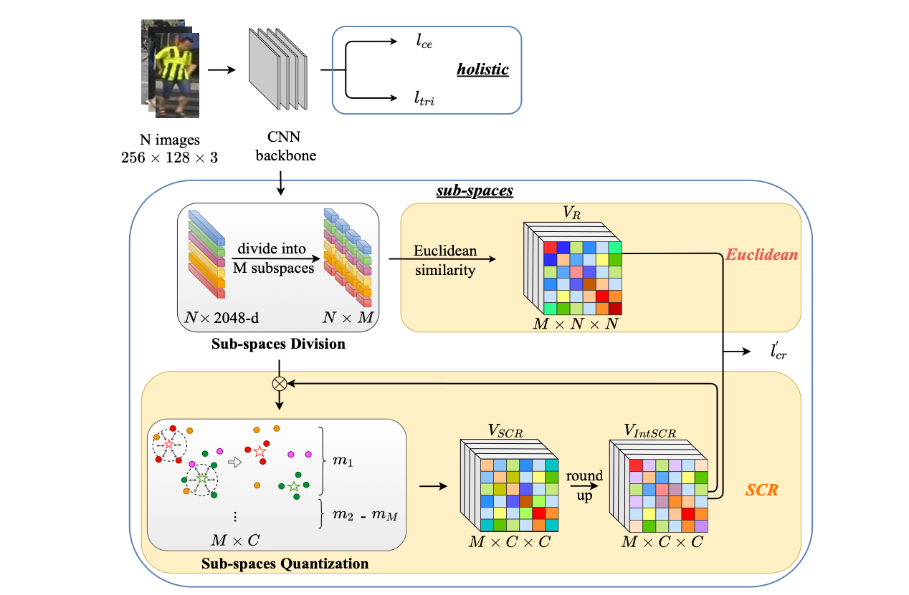

|  |
Qingze Yin1, Guanan Wang 2, Guodong Ding3, Qilei Li4, Shaogang Gong4, and Zhenming Tang1
1Nanjing Univerisity of Science and Technology, 2Chinese Academy of Sciences, 3National Univerisity of Singapore, 4Queen Mary University of London
Person Re-Identification (ReID) matches pedestrian across disjoint cameras. Existing ReID methods adopting real-value feature descriptors have achieved high accuracy, but they are low in efficiency due to the slow Euclidean distance computation as well as complex quick-sort algorithms. Recently, some works propose to yield binary encoded person descriptors which instead only require fast Hamming distance computation and sim- ple counting-sort algorithms. However, the performances of such binary encoded descriptors, especially with short code (e.g, 32 and 64 bits), are hardly satisfactory given the sparse binary space.
To strike a balance between the model accuracy and efficiency, we propose a novel Sub-space Consistency Regularization (SCR) algorithm that can speed up the ReID procedure by 0.25 times than real-value features under same dimensions whilst maintain a competitive accuracy, especially under short codes. SCR transforms real-value features vector (e.g, 2048 float32) with short binary codes (e.g, 64 bits) by first dividing real-value features vector into M sub-spaces, each with C clustered centroids. Thus the distance between two samples can be expressed as the summation of respective distance to the centroids, which can be sped up by offline calculation and maintained via a look-up-table. On the other side, these real-value centroids help to achieve significantly higher accuracy than using binary code. Lastly, we convert the distance look-up-table to be integer and apply the counting-sort algorithm to speed up the ranking stage. We also propose a novel consistency regularization with an iterative framework. Experimental results on Market-1501 and DukeMTMC- reID show promising and exciting results. Under short code, our proposed SCR enjoys Real-value-level accuracy and Hashing-level speed.
Files: [pdf]
Citation:
@article{yin2022rapid,
title={Rapid Person Re-Identification via Sub-space Consistency Regularization},
author={Yin, Qingze and Wang, Guanan and Ding, Guodong and Li, Qilei and Gong, Shaoggang and Tang, Zhenmin},
journal={arXiv preprint arXiv:2207.05933},
year={2022}
}